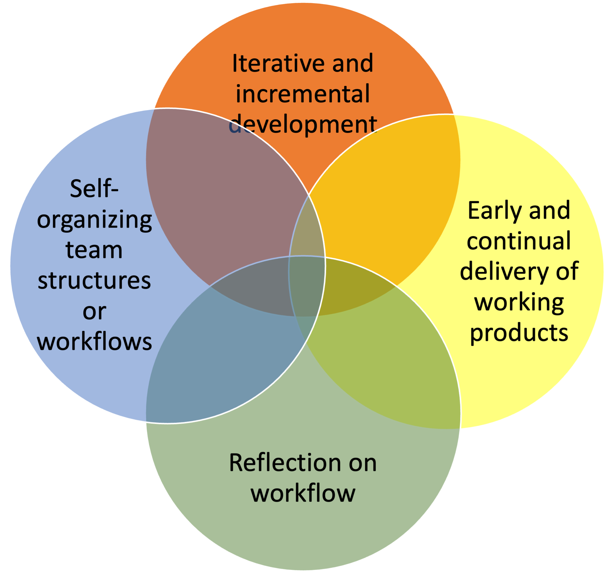
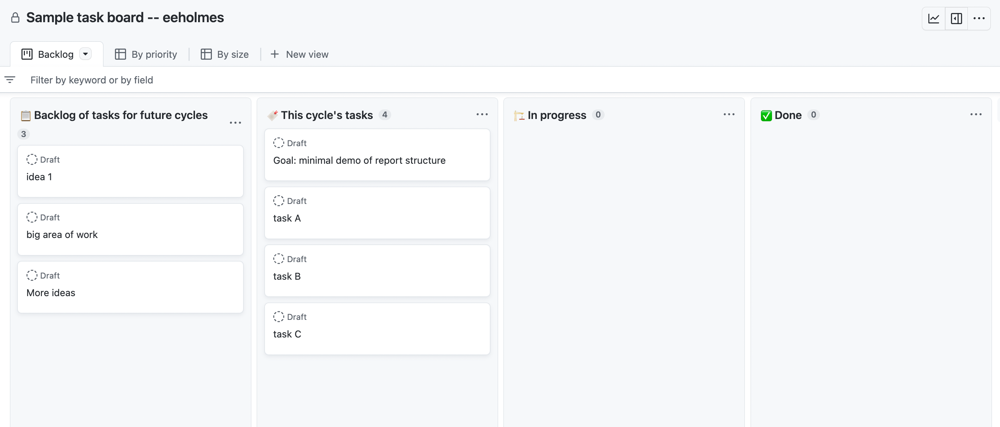
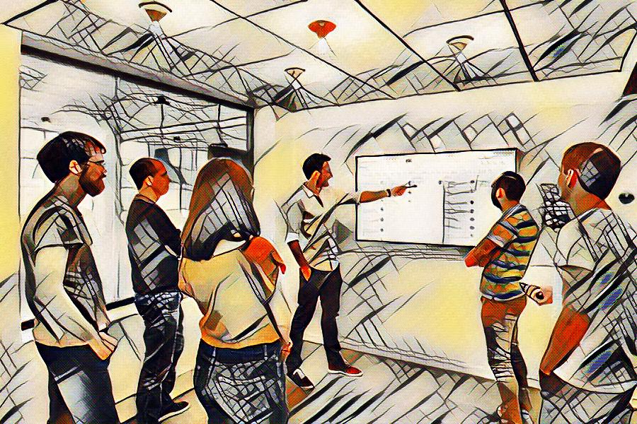
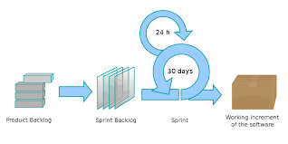
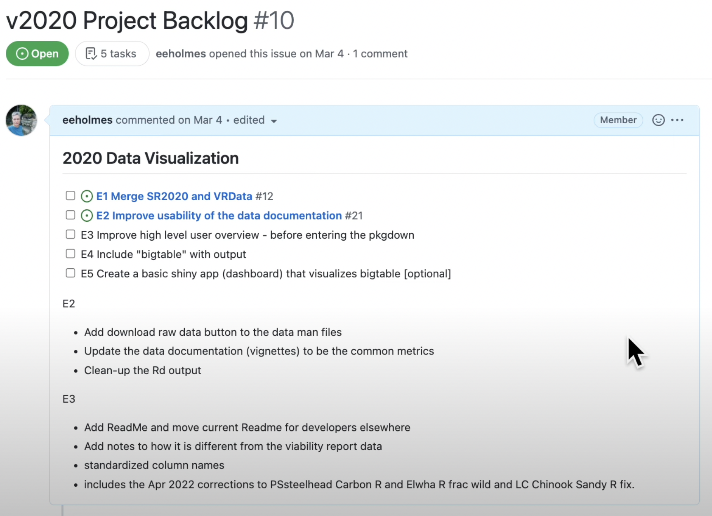
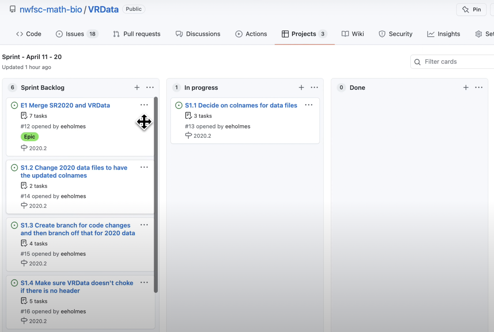

Intro to Kaizen and Agile
for science teams
Northwest Fisheries Science Center, NOAA
NMFS Open Science
Fish 549 March 3, 2023
https://eeholmes.github.io/talks/
Today’s Plan
- A Kaizen group game! The Ball Point Game
- Learn about the core ideas of “Agile” for team projects
- Intro to the basics of Scrum Sprints
- Demo of Scrum Sprint on GitHub project boards
What is Kaizen?
Kaizen means continuous improvement but refers more specifically to a cycle of improvement. In its simple1 form, it is the Deming Cycle
- Plan
- Do = work the plan
- Check = how’d we do?
- Act (or Reflect) = think about what the results mean and what you should do in response
But Kaizen is more than that. Kaizen also involves flattening team hierarchy to foster improvement and innovation. Kaizen seeks to “empower” the worker/developers and flips the role of the manager from “boss” to coach/teacher/servant.
What is agile?
A lightweight workflow structure for software development which is characterized by 4 key features, 2 of which are closely Kaizen related. In this lecture, I’ll introduce SCRUM, a very popular agile workflow process.
The term “agile” is traced back to the 2001 Agile Manifesto1, but the ideas are much earlier and broader. It is very related to Kaizen ideas and “Toyota Way”.
Are these useful for science?
Yes! These are methods for driving innovation and discovery.
Elements of Kaizen and agile can be used in isolation. These are proven methods to improve team collaboration and project workflow.
Note
Agile methods are ubiquitous in software development. But also widely used in any innovation-driven industry.
Kaizen is a core element of Lean Manufacturing, a very influential methodology in modern manufacturing. Search for “Toyota Way”.
Four elements of agile
I divide the ideas in agile methodologies into four areas that are always present in one form or another.

- Breaking work into chunks
- Reflection and planning after each chunk
- Radically anti-hierarchical team structure
- Regular facetime
- Respect for the individual (learning focus)
- Early and regular end-user feedback
Iterative Cycles
A key principle: dividing work into 10-30 day chunks with plan and review (or check) elements

Flat, self-organizing teams
Flat team structure, team member “agency” and a spirit of cooperation instead of competition is central to Kaizen and agile. Two key agile team habits that support this are:
Task boards
- visualize your workflow
- team awareness
- encourages cycles of work
- encourages intentionality
- helps team not waste time on unimportant things
Facetime
- short daily check-ins, aka “stand-ups”
- co-working, group or often paired
Task boards
Here is a task board set up on a GitHub project board.
Why use a task board?

team awareness fundamentally changes the team dynamic
forces work to be iterative and incremental
helps team define a minimally complete chunk of work that can be reviewed
quickly reveals bottlenecks and barriers
Keeping the task board up to date
Keeping the team task board fresh won’t happen by itself. Everyone get pulled into their own rabbit hole and then team becomes silo-ed.
Daily Standup

time-boxed 15 minutes
FORM: what I did yesterday, what I plan to do today, any barriers
a designated team facilitator runs this
done around the task board
can be done asynchronously but much better if it is live
gets the team in flow
Scrum
Most popular and widely used method in software development, but not restricted to software at all.
Formalizes the workflow cycles and events
Scrum Roles and Artifacts
Roles
- Product Owner: Job is to decide what the group is doing and curate the backlog of tasks
- Scrum master: Facilitator and coach the team
- Developers: Do the tasks
Artifacts
- Backlog: All the planned tasks in various stages of ready
- Sprint Backlog: Things to be completed in current sprint
- Product Increment: What you will complete in this sprint. Needs to be something you can demo or present
Sprint Cycle
Product Owner Works on the backlog and gets tasks ready for next sprint.
Scrum Master
- Day 1: Facilitates planning mtg
- Day 8-28:
- Runs daily standups.
- Helps team members with barriers
- Works with product owner
- Last day: Facilitate Retrospective meeting
Team
- Day 1: Sprint Planning
- Day 8-28: Work on tasks with daily standups
- 2 days before end of sprint: Sprint Review Show work to “customer”1
- Last day: Retrospective Team reflects on how their process of work did and picks one thing to do better
1 In a science context, this might be an informal presentation. Formal enough that you need to do a good job, not so formal as to need to spend a lot of time on polishing it.
I left out some big parts of Scrum
This is a Lean/Agile/Kaizen methodology
- radically anti-hierarchical team structure
- rethinking of human agency within team structures
- radical candor and authenticity within teams
Scrum as implemented in software development
User Stories and Epics How you plan tasks as Scrum is implemented in software development.
Velocity Velocity and measuring the size of tasks is a key part of Scrum in software development.
Next steps to learn
Watch some of the videos or read a intro book. I found this 3-hr video course most helpful. Free via UW Libraries. Scrum Fundamentals
Once you understand the basics, start experimenting with sprints and sprint planning on your own (solo), e.g. for a talk or a class paper. Get used to the plan, work from tasks, review framework before trying with a group.
Watch me plan a simple solo sprint. 5 minute video. Simple Sprint Planning using GitHub
Example Sprint with GitHub


Videos to learn more
Kanban Boards
Atlassian Kanban video series
Scrum
These cover the basic elements
5 minute intro to Scrum Basic Structure of Scrum
12 minute intro to Scrum Product development perspective
Some references I liked
I really liked this video course. You can get it free via UW Libraries. Scrum Fundamentals
Scrum: The Ultimate Beginner’s Guide To Learn And Master Scrum Agile Framework by Hein Smith
Scrum: The Art of Doing Twice the Work in Half the Time by Jeff Sutherland History, won’t teach you Scrum